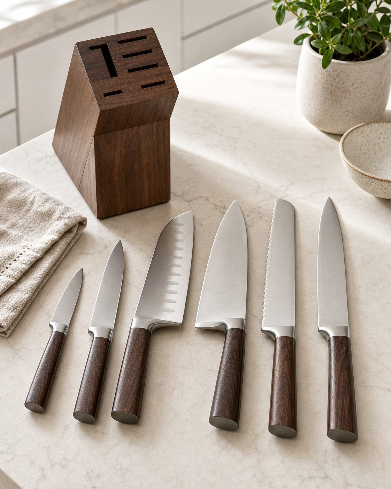

Промтзилла
Как создать продающее описание товара по фото с помощью ИИ
Загрузи фото товара — GPT Image 2 или Nano Banana PRO сначала распознает, что находится на снимке, а затем соберёт продающее описание для карточки, маркетплейса или объявления.
Пошаговая инструкция
- 1Подготовь чёткое фото товара на нейтральном фоне: товар должен быть хорошо виден, без сильных фильтров и лишнего сжатия.
- 2Открой GPT Image 2 или Nano Banana PRO и загрузи исходное изображение.
- 3Скопируй RU-промт ниже и вставь его в поле ввода вместе с фото.
- 4Попроси сохранить важные детали: лицо, предметы, стиль, ракурс и естественное освещение.
- 5Если результат выглядит слишком искусственно, добавь: «сделай мягче и реалистичнее, без чрезмерной ретуши».
- 6Сравни результат с исходником и выбери самый естественный вариант.
Пример результата

ФотоЗагружаем фото товара: набор кухонных ножей с деревянными ручками и подставкой.
Результат
Что на фото: набор из 6 кухонных ножей с лезвиями из нержавеющей стали, деревянными ручками и подставкой для хранения.
Продающее описание:
Премиальный набор кухонных ножей для тех, кто любит готовить красиво, быстро и с удовольствием. В комплект входят основные ножи для ежедневных задач: от аккуратной нарезки овощей до работы с мясом, хлебом и крупными продуктами.
Стальные лезвия выглядят прочными и аккуратными, а тёплые деревянные ручки добавляют набору стильный, дорогой вид. Такой комплект легко впишется в современную кухню и подойдёт как для личного использования, так и в качестве практичного подарка.
Преимущества:
— 6 ножей для разных кухонных задач
— удобные деревянные ручки
— аккуратная подставка для хранения
— универсальный дизайн без лишних деталей
— подходит для дома, дачи или подарка
Промт
RU
Загружаю фото товара. Сначала распознай, что находится на фото, затем создай продающее описание для карточки товара, маркетплейса или объявления. Цель: получить готовый продающий текст, который помогает покупателю понять ценность товара и захотеть его купить. Сначала выведи блок «Что на фото»: — что это за товар — сколько предметов видно — материал, цвет, форма, комплектация — важные визуальные детали — если чего-то не видно точно, напиши «по фото похоже», без выдуманных характеристик Затем выведи блок «Продающее описание»: — короткий цепляющий заголовок — 1–2 абзаца красивого описания простым языком — ключевые преимущества списком — кому подойдёт товар — сценарии использования — мягкий призыв к покупке без агрессивного давления Стиль текста: — на русском языке — убедительно, но без пустых обещаний — не придумывай бренд, цену, гарантию, страну производства и точные характеристики, если их не видно на фото — текст должен быть готов для карточки товара
EN
I'm uploading a product photo. First identify what is shown in the image, then create a persuasive product description for a product card, marketplace listing or classified ad. Goal: produce ready-to-use sales copy that helps the buyer understand the product value and want to buy it. First output a block called "What is in the photo": - product type - number of visible items - material, color, shape and set contents - important visual details - if something is not clearly visible, say "it appears to be" and do not invent exact specs Then output a block called "Sales description": - short compelling headline - 1–2 polished paragraphs in simple language - key benefits as a list - who the product is suitable for - use cases - soft call to action without aggressive pressure Writing style: - write in Russian - persuasive but honest - do not invent brand, price, warranty, country of origin or exact technical specs if they are not visible - text must be ready for a product listing
Теги
Эту страницу можно использовать онлайн: промпт подходит для работы с ИИ и нейросетью.